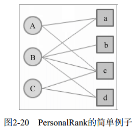
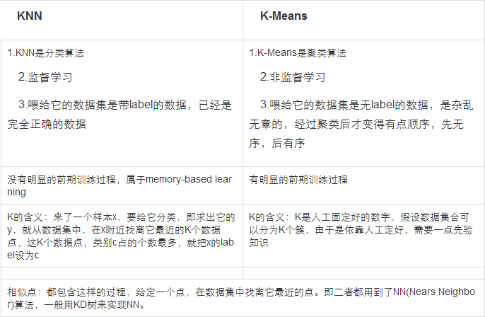

问题背景：
- 对于提出的问题，根据问题分类找到相似问题
根据问题分类算法获得问题分类或者问题概要（是问题按照内容来聚类，不是大类），从数据库中找到并推荐相似度前N的问答。
- 对于缺乏相似问答的问题（从第1步中得出相似度低于哪个值时推荐就不准确，超出这个值，就进入第2步），推荐社交关系好友来帮助回答
先用问题分类算法对问题进行分类，然后基于社交网络图和用户分类算法进行解答者的推荐，一层层往下挖掘社交网络，直到找到解答者。后期加入互惠推荐思想和信誉系统。
一、用户分类算法
二、用户推荐算法
1. 基于随机游走的PersonalRank算法
这种算法是基于图的推荐算法中的一种解决方案。具体实施方案如下。

在一个二分图中，存在若干用户节点、若干物品节点以及用户物品之间的关系连线。假设现在要给用户A推荐物品，根本任务就是要计算各个物品对于A的概率。在PersonalRank算法中，从用户A节点出发，进行N轮的游走，直到各个物品对于A的概率都趋于收敛。每轮游就是把二分图G各个节点之间的关系走一遍，即上图的各条连线。每轮游走之后，各个节点被访问到的概率就刷新一遍，直到收敛。
三、文本分类算法
1. Jaccard相似度法
(1) 定义：分词、统计词汇数量、计算两个文本中词汇的交集与并集的商。
(2) 分词算法：
a. 一种没有语料字典的分词方法；
b. k-shingle算法；
(3) 优化：
a. 将词汇表进行hash代替；
b. 使用特征矩阵来描述相似度。
2. N-Gram+VSM+TF/IDF+LIBSVM分类方法（适合短文本分类）
(1) N-Gram：适合短文本的分词方法。
这里的N-Gram其实就是N+1阶马尔科夫模型。
3. 数据降维算法
(1) PCA（主成分分析）：从多元事物中解析出主要影响因素，将高维数据投影到较低维空间。
假设有100个m维样本，操作方式是计算样本矩阵的协方差，得到协方差矩阵，然后计算此协方差矩阵的特征值和特征向量并得出前n个（n是降维后的位数）特征值所对应的特征向量，组成一个mn特征矩阵，乘以原来的100m矩阵，就得到一个100*n矩阵，维数就下降了。
(2) SVD（奇异值分解）
4. KNN与K-Means区别

(1) KNN优缺点
a. 优点：简单，易于理解实现，无需估计参数、无需训练；适合分类稀有事件；适合多分类问题。
b. 缺点：计算量较大，对每一个待分类的文本都要计算它到全体已知样本的距离。
(2) KNN改进策略
a. 改进分类效率：事先对样本属性进行简约，删除对分类结果影响较小的属性，快速得出待分类样本的类别。这种算法适合样本容量比较大的类域的自动分类。
b. 改进分类效果：采用可调整权值的KNN法；或者，由于不同分类的文件本身有数量上的差异，因此也应该依照训练集合中各种分类的文件数量，选取不同数目的最近邻居来参与分类。